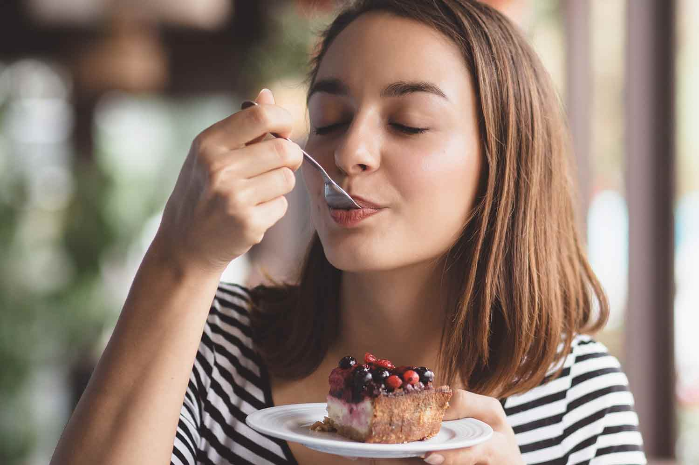

"Una Locura deliciosamente irresistible"
En nuestra postrería, transformamos ingredientes simples en experiencias inolvidables para tu paladar.Cada bocado de nuestros postres está pensado para celebrar los momentos mas dulces de la vida, cominando texturas crujientes con cremas suaves y frutas frescas de la estación. Amamos los detalles y horneamos diariamente para garantizar la frescura y la máxima calidad en cada una de nuestras porciones.
Creemos que hacer postres es un arte culinario que merece respeto, paciencia y mucha dedicación. Por eso, elaboramos nuestras bases, jarabes y decoraciones de forma completamente artesanal, rescatando recetas tradicionales y dándoles un toque moderno y elegante. Desde un clásico cheesecake con salsa densa de maracuyá hasta el más delicado tiramisú, ponemos el corazón en cada detalle del proceso.
Queremos ser el rincón favorito de tus tardes, el cómplice de tus antojos y el toque especial de todas tus celebraciones. Ya sea que nos visites para disfrutar de un postre individual con un buen café o que lleves una de nuestras tortas enteras a casa para compartir con la familia, nuestra promesa es regalarte una sonrisa llena de sabor. Te invitamos a descubrir tu nuevo postre favorito hoy mismo.